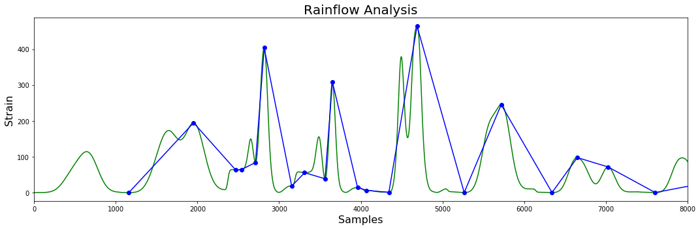

Keywords: Bridge Weigh in Motion, Structural Health Monitoring, Heavy Goods Vehicles, Structural Inspection
Heavy Goods Vehicles (HGVs) are a significant source of wear on bridges. The impact of HG traffic becomes particularly important if a bridge is already in a weakened state. For instance a physical inspection may detect a maintenance issue such as corrosion of a structural element. The next question is how long is it safe to operate the bridge? By giving an accurate, up to date picture of the bridge loading, a BWIM system can support the engineer in this decision.
When assessing safety, surprisingly little attention is paid to the loading of the structure by HG traffic. The assumptions about loading made during the design phase, perhaps forty years earlier, may no longer be valid. They may, for instance, underestimate the amount of HG traffic, the average weight of individual HGVs or the degree of congestion on the bridge. When a bridge's safety is re-assessed it is critical that an appropriate model of the traffic load based on measured data is used. An up to date model of loading will allow engineers to make a more informed decison about the urgency of repairs and the continued operation of the bridge.
Loading can affect the bridge both statically, by exceeding an element's yield strength and dynamically, by causing fatigue failures. In the next section we shall deal with static loading: we describe a statistical approach to assessing structural safety and how data from BWIM can be used to conduct it. We then consider dynamic loading: we describe how cyclic loading is related to fatigue failure and how BWIM data can be processed to predict when a structural element is likely to fail.
The static load on a bridge exerted by HG traffic depends on two factors:
Both of these factors are random variables: they can only be modelled in statistical terms. The weight of a randomly selected vehicle cannot be known in advance, however, we can say that it will fall into a given distribution. We use the Conditional Axle Load (CAL) model to quantify this statistical variation of loads applied to the bridge.. The number of HGVs simultaneously on the bridge depends on whether HGVs are evenly distributed among other traffic, moving in convoy, or in closely packed convoys that are stationary due to congestion. It will also depend on the diurnal and weekly traffic patterns. We quantify these effects using our Traffic Flow Model. Both CAL and traffic Flow models are stochastic, accounting for both random and deterministic factors.
The CAL and Traffic Flow models form the basis of our statistical analysis. They are combined into the load model, which along with a statistical model of the structural element in question are passed to the simulation engine. This will give an estimate of the likelihood the element will fil within the defined time period. In the following subsections we will describe how the load model is derived from BWIM data and the method by which we combine load and structral models within a probablistic framework.
The safety of a bridge is assessed by examining individual structural elements. Like the loading of the bridge, the strength of a given structural element is also a random variable and is also best treated in probabilistic terms. It follows that any prediction about the failure of the element will also be probabilistic.
Consider a trivial example: a beam of resistance R, is loaded with a force S. If the load exceeds the resistance, i.e. R ‹ S, then the beam will fail. We can plot all the possible combinations of strength and load, opposite. The failure region, i.e. those combinations of R and S for which the beam will fail, lie on one side of the line R-S=0, and the safe region lies on the other. We call this line the Limit State Function.
Now, assume that we know that structural elements from the same batch have a statistical distribution of resistances, centred around 90k Newtons (left). Furthermore, we know from our BWIM measurements that most loads occur around 60k Newtons, but occasionally we will get a higher load. What is the probability that the beam will fail? To know this, we must consider the joint probability of R and S (right). The probability of failure, is the sum of probabilities in the failure region. In more mathematical terms, this is the integral of the joint probability function over the region bounded by the limit state function.
In this trivial example, it is easy to understand what is happening, but surprisingly difficult to estimate the probability of an event intuitively. Things get more complicated if there are many variables—as there usually are, or if they are correlated with one another. For this reason, in the early nineties we developed the Variables Processor software library. This remains at computational core of many of our subsequent applications, the interested reader is referred to [2].
With our models of vehicle weight and traffic flow, and data from BWIM, we can predict the likely loads on a bridge. With our structural engineering expertise we select a series of critical structural elements, and estimate the proability of failure as a function of load. The Load Model and Strtuctural Model are then passed to our Stochastic Simulation Engine which will the estimate the likelihood of the element failing.
A more insidious mode of failure is caused by cyclic loading of a bridge. As a vehicle traverses a bridge, each axle induces a loading cycle. The cumulative effect of these impacts may cause a bridge to fail through fatigue — even if its yield strength is never approached.
The number of loading cycles at which an element will fail for a given loading is given by its a curve of the form shown opposite. By measuring the frequency and severity of impacts we can model the stresses to which a bridge is exposed to each day. We can extrapolate this into the past and into the future to show how far along the curve the bridge is and how much longer we can safely operate the bridge.
Bridge Weigh in Motion provides a time history of the axle impacts on the bridge. This must be converted into loading cycles. This is trivial when the peaks are well seperated, but if there is sigificant overlap then Rainflow analysis must be used.
Once the cycles have been identified Miner's Rule can be applied to estimate the structural element's position on the fatigue curve — and predict the time to failure. Alternatively, the cyles can be plotted on a Rainflow Matrix to identify high impact cycles. These can be traced back, using the BWIM database, to the culprit vehicle.
Loading due to HG traffic is a critical factor in any assessment of bridge safety. Yet models of loading by HG traffic are often based on assumptions that out of date, or lack nuances from the real world. It is clearly desirable to get actual measurements of traffic load which can inform our models. Measurements from iBWIM together with appropriate statistical models can take much of the guesswork out of load modelling.